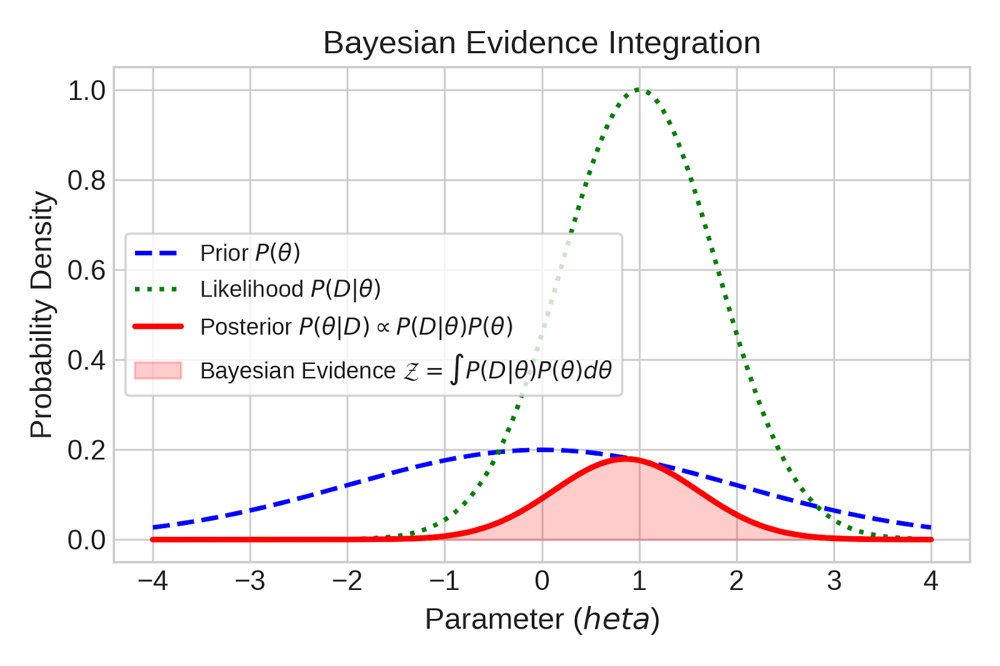

# Introduction to exoplanets, python, data, coding, statistics, etc We will use some data from the NASA exoplanet archive for this. <div class="fragment" markdown="1"> Please open `all_code/coding_referesher_example.py` in Zed </div> -v- ## Course Roadmap <div class="fragment" markdown="1"> - **Data Acquisition:** Querying NASA Exoplanet Archive via TAP </div> <div class="fragment" markdown="1"> - **Visualisation:** Best practices & multidimensional population plots </div> <div class="fragment" markdown="1"> - **Modeling & Optimization:** Linear/quadratic fits via Scipy </div> <div class="fragment" markdown="1"> - **Priors & Likelihood:** Constructing the Bayesian Posterior </div> <div class="fragment" markdown="1"> - **Model Comparison:** $\chi^2$, BIC, and WAIC </div> <div class="fragment" markdown="1"> - **MCMC Sampling:** Posterior exploration using `emcee` </div> <div class="fragment" markdown="1"> - **Code Crafting:** OOP, modular structure & testing </div> --- # 1. Accessing Astronomical Data <div class="fragment" markdown="1"> - Frequently, we will access APIs from directly within python. </div> <div class="fragment" markdown="1"> - This is most frequently done wit `astroquery` </div> <div class="fragment" markdown="1"> - For this example, we will access the **[NASA Exoplanet Archive](https://exoplanetarchive.ipac.caltech.edu/)** TAP interface via `astroquery.ipac.nexsci.nasaexoplanetarchive` </div> <div class="fragment" markdown="1"> - Likely need to filter out planets with highly uncertain parameters/nan values </div> <div class="fragment" markdown="1"> - Prefer standard tabular formats (`astropy.table` / `pandas.DataFrame`) </div> -v- ## Querying Transit Planet Population - SQL direct ```python from astroquery.ipac.nexsci.nasaexoplanetarchive import NasaExoplanetArchive query = """ SELECT pl_name, pl_rade, pl_radeerr1, pl_bmasse, pl_bmasseerr1, pl_eqt, st_metratio FROM ps WHERE default_flag = 1 AND tran_flag = 1 AND pl_rade IS NOT NULL AND pl_bmasse IS NOT NULL """ data = NasaExoplanetArchive.query_criteria(select=query) ``` -v- ## Querying Transit Planet Population - Function ``` from astroquery.ipac.nexsci.nasaexoplanetarchive import NasaExoplanetArchive cols="pl_name,pl_rade,pl_radeerr1,pl_bmasse,pl_bmasseerr1,pl_eqt,sy_vmag,sy_gaiamag,st_mass,st_teff,st_rad" wh="default_flag=1 AND tran_flag=1 AND pl_rade IS NOT NULL AND pl_rade > 0 AND pl_bmasse IS NOT NULL AND pl_bmasse > 0 AND pl_bmasseerr1 IS NOT NULL AND pl_bmasseerr1 > 0 AND pl_radeerr1 IS NOT NULL" table = NasaExoplanetArchive.query_criteria(table="ps", where=wh, select=cols) ``` --- # 2. Visualisations ## What Makes a Great Publication Plot? <div class="fragment" markdown="1"> - **Perceptually Uniform Color Maps:** Use `viridis`, `magma`, `plasma` (avoid `jet`) </div> <div class="fragment" markdown="1"> - **Accessibility:** Ensure high contrast and colorblind safety </div> <div class="fragment" markdown="1"> - **Self-Contained Labels:** Clear physical units on all axes (e.g., $R_\oplus$, $M_\oplus$, $K$) </div> <div class="fragment" markdown="1"> - **Data-to-Ink Ratio:** Avoid unnecessary grids, borders, or chartjunk </div> -v- ## Your turn - the planetary population in multiple dimensions - Using matplotlib, <div class="fragment" markdown="1"> - **X-axis:** Planetary Mass ($M_\oplus$) </div> <div class="fragment" markdown="1"> - **Y-axis:** Planetary Radius ($R_\oplus$) </div> <div class="fragment" markdown="1"> - **Color (cmap):** Planetary Equilibrium Temp ($T_{\text{eq}}$) </div> <div class="fragment" markdown="1"> - **Marker Size:** Stellar Magnitude ($V$ or $K$) </div> <div class="fragment" markdown="1"> - Try other parameters (e.g. period, temperature, stellar radius, etc) </div> <div class="fragment" markdown="1"> - Try other plot types, e.g. a 2D kernel density estimation (KDE) with `seaborn` </div> -v- ``` scatter = ax.scatter(df['pl_bmasse'],df['pl_rade'], c=np.log10(df['pl_eqt']), s=(15 - df['sy_vmag'].clip(upper=15)) * 15 + 20, cmap='viridis', alpha=0.8, edgecolors='k',linewidth=0.5 ) cbar = fig.colorbar(scatter, ax=ax) cbar.set_label(r'$\log_{10}(\text{Teff } [K])$') ax.set_xlabel(r'Mass $M_{\text{Earth}}$ [$M_\text{Earth}$]') ax.set_ylabel(r'Planetary Radius $R_\oplus$ [$R_\text{Earth}$]') ax.set_title('Sub-Neptune Population Overview') ax.grid(True, linestyle='--', alpha=0.5) plt.show() ``` --- # 3. Building parametric models #### Example - Mass-Radius Relation <div class="fragment" markdown="1"> - Planetary compositions mean $R$ and $M$ should correlate... </div> <div class="fragment" markdown="1"> - Let's try to build a parametric model for exoplanet mass (specifically for _sub-Neptunes_ with $1.8 \le R_\oplus \le 6.0$) </div> <div class="fragment" markdown="1"> - **Simplifying Assumption:** Radius $R$ is known precisely ($\sigma_R \ll \sigma_M$) </div> -v- ### Your turn: Building a parametric model in python <div class="fragment" markdown="1"> - Create functions that, given a radius and a list of parameters (the polynomial coefficients) produces an expected mass. </div> <div class="fragment" markdown="1"> - Model 1 (Linear): $\ln(M) = a \ln(R) + b$ </div> <div class="fragment" markdown="1"> - Model 2 (Quadratic): $\ln(M) = c_2 \ln(R)^2 + c_1 \ln(R) + c_0$ </div> -v- ``` def linear_model(theta, x): # Define a linear model from parameter array theta a, b = theta return a * x + b def quadratic_model(theta, x): # Define a quadratic model from parameter array theta a, b, c = theta return a * x**2 + b * x + c ``` --- # 4. Model optimisation <div class="fragment" markdown="1"> - We want to find the parameters which best fit the data </div> <div class="fragment" markdown="1"> - The probability distribution for a datapoint, $y_i$, normally distributed from some model value $f(x)$, is $P(y_i | f) = \frac{\exp(-(y_i-f(x_i))^2/2\sigma_i^2))}{\sqrt{2\pi}\sigma_i}$ </div> <div class="fragment" markdown="1"> - The "likelihood" is the probability of obtaining your data $y$ given the model $f$ and the fixed observed values of $x_i$ and $\sigma_i$ $\mathcal{L} = P({y}^N_{i=1} | f, I) = \prod_{i=1}^N P(y_i | f) $ </div> <div class="fragment" markdown="1"> - The "log likelihood" remove the exponential term giving: $\ln \mathcal{L} = K - \sum_{i=1}^N\frac{(y_i-f(x_i))^2}{2\sigma_{yi}^2} = K - \frac{1}{2}\chi^2 $ </div> -v- ### Your turn: Assessing log likelihood <div class="fragment" markdown="1"> - Create a function which can compute the log likelihood for your example function </div> -v- ``` def log_likelihood(theta, x, y, yerr, model=linear_model, **kwargs): """ Gaussian log likelihood. """ ymodel = model(theta, x) log_lik = -0.5 * np.sum(((y - ymodel) / yerr)**2 + np.log(2 * np.pi * yerr**2)) return log_lik ``` -v- ## Optimization: Gradient Descent vs. Direct Search <div class="fragment" markdown="1"> - **Best-Fit Search:** Finding parameter set $\widehat{\theta}$ that maximises log likelihood. </div> <div class="fragment" markdown="1"> - **Gradient Descent:** Steps downhill using local "slope" in likelihood, efficient for high dimensions </div> <div class="fragment" markdown="1"> - **Nelder-Mead:** Simplex direct search, useful when gradients are noisy or unavailable </div> -v- <img src="../slide_data/slide_images/Gradient descent.png" class="r-stretch"> -v- ## Frequentist Metrics: $\chi^2$ & BIC <div class="fragment" markdown="1"> - **$\chi^2$ Minimization:** $\chi^2 = \sum \frac{(y_i - f(x_i, \theta))^2}{\sigma_i^2}$ </div> <div class="fragment" markdown="1"> - For well-behaved gaussian distributions, maximising log likelihood is equivalent to minimising $\chi^2$. </div> <div class="fragment" markdown="1"> - **Reduced $\chi^2$ ($\chi^2_\nu$):** $\chi^2 / (N - k)$ </div> <div class="fragment" markdown="1"> - **Bayesian Information Criterion (BIC):** </div> <div class="fragment" markdown="1"> $$\text{BIC} = k \ln(N) - 2 \ln(\widehat{L}) \approx \chi^2 + k \ln(N)$$ </div> <div class="fragment" markdown="1"> - $\Delta\text{BIC} > 10$ indicates strong evidence against the higher-BIC model </div> -v- #### Your turn: model comparison - Compute the BIC for the two models (linear and quadratic) - Which model is preferred? -v- ``` def BIC(loglik,n_params,nsamps): return 2 * loglik + n_params * np.log(nsamps) ``` --- # 5. Bayesian Priors & Posterior Formulation <div class="fragment" markdown="1"> - We usually have information about our parameters - **priors** </div> <div class="fragment" markdown="1"> - This could be from past observations or theoretical considerations </div> -v- <div class="fragment" markdown="1"> - To compute the most likely model given the datapoints and the priors, we use Bayes theorem: $ P(f | {y}^N_{i=1}, I) = \frac{P({y}^N_{i=1} | f, I) P(f | I)}{P({y}^N_{i=1} | I)}$: </div> <div class="fragment" markdown="1"> - The likelihood function $P({y}^N_{i=1} | f, I)$ </div> <div class="fragment" markdown="1"> - Our prior knowledge on model parameters $P(f | I)$ </div> <div class="fragment" markdown="1"> - $P({y}^N_{i=1} | I)$ - the probability of datapoints given their position and error (Typically this constant and can be ignored.) </div> -v- ## Types of Prior - **Uniform (Flat) Priors:** <div class="fragment" markdown="1"> - Restricts parameters to physically allowed ranges (e.g., positive mass/slope) </div> <div class="fragment" markdown="1"> - Gives equal probability to all values within bounds, 0 outside </div> - **Gaussian (Informative) Priors:** <div class="fragment" markdown="1"> - Incorporates previous measurements (e.g., stellar abundance or known inclination) </div> <div class="fragment" markdown="1"> - Penalizes parameter values as they move further from the expected mean </div> -v- #### Your turn: Adding a prior function <div class="fragment" markdown="1"> - Add a function which, given priors for each parameter, adds a log prior term (e.g. ensures the gradient is uniformbetween 0 and 5) </div> <div class="fragment" markdown="1"> - Log likelihood & log prior can then produce a combined **log probability** term for gradient descent. </div> -v- ``` def log_prior_linear(theta): """ Calculates log prior using a combination of: 1. Uniform prior on slope 'a' (must be physical: 0 < a < 5) 2. Gaussian prior on intercept 'b' centered on 0.5 with sigma=2.5 """ a, b = theta # 1. Uniform Prior component if not (0.0 < a < 5.0): return -np.inf # Reject parameters outside range # 2. Gaussian Prior component: log N(b | mu=0.5, sigma=1.0) mu_b, sigma_b = 0.5, 5.0 log_prior_b = -0.5 * ((b - mu_b) / sigma_b)**2 - np.log(sigma_b * np.sqrt(2 * np.pi)) return log_prior_b ``` --- # 6. MCMC & Sampling ## Posterior Exploration <div class="fragment" markdown="1"> - Single best-fits ignore parameter uncertainties and complex parameter trade-offs </div> <div class="fragment" markdown="1"> - **Markov Chain Monte Carlo (MCMC):** Explores the full probability distribution $P(\theta|D)$ </div> <div class="fragment" markdown="1"> - Uses **Metropolis** algorithm to [step around parameter space](https://chi-feng.github.io/mcmc-demo/app.html?algorithm=RandomWalkMH&target=standard). </div> <div class="fragment" markdown="1"> - **Ensemble Samplers (`emcee`):** Uses multiple interconnected "walkers" to map parameter space </div> -v- #### Your turn: running emcee <div class="fragment" markdown="1"> - Use emcee and your log probaility term to sample the parameters and their values </div> <div class="fragment" markdown="1"> - Use the `corner` module to plot the sampled parameter estimates </div> -v- <div class="fragment" markdown="1"> - **Bayesian Evidence ($\mathcal{Z}$):** Integral of Likelihood $\times$ Prior over all parameters </div> <div class="fragment" markdown="1"> $$\mathcal{Z} = \int P(D|\theta) P(\theta) d\theta$$ </div> <div class="fragment" markdown="1"> <p></p> </div> -v- **Advanced Samplers:** <div class="fragment" markdown="1"> - **HMC / NUTS (`PyMC`):** Uses gradient physics to navigate high-dimensional spaces ([e.g.](https://chi-feng.github.io/mcmc-demo/app.html?algorithm=EfficientNUTS&target=banana)) </div> <div class="fragment" markdown="1"> - **Nested Sampling (`dynesty`, `ultranest`):** Integrates shell-by-shell to directly compute $\mathcal{Z}$ </div> -v- ## MCMC Diagnostic Checklist <div class="fragment" markdown="1"> 1. Inspect trace plots for convergence and initial burn-in phase </div> <div class="fragment" markdown="1"> 2. Check Integrated Autocorrelation Time ($\tau$) </div> <div class="fragment" markdown="1"> 3. Target total sample size $\gg 50 \times \tau$ </div> <div class="fragment" markdown="1"> 4. Plot corner distributions to reveal parameter correlations </div> --- # 7. Advanced Model Selection ## Information Criteria with `ArviZ` <div class="fragment" markdown="1"> - Simple $\chi^2$ and BIC fail when priors strongly constrain parameters or parameters correlate </div> <div class="fragment" markdown="1"> - **Watanabe-Akaike Information Criterion (WAIC):** Fully Bayesian metric predicting out-of-sample data accuracy </div> <div class="fragment" markdown="1"> - **LOO (Leave-One-Out Cross-Validation):** Estimates model generalization error without needing to re-fit </div> --- # 8. Software Architecture in Astrophysics ## Code Organization Hierarchy <div class="fragment" markdown="1"> - **Scripts:** Quick data processing (hard to reuse or test) </div> <div class="fragment" markdown="1"> - **Functions:** Modular, single-responsibility logic with clear docstrings </div> <div class="fragment" markdown="1"> - **Classes:** Object-oriented code grouping data, models, and fitting methods together </div> -v- ## Production-Grade Python Tips <div class="fragment" markdown="1"> - **Type Hinting & Docstrings:** Makes code readable and self-documenting </div> <div class="fragment" markdown="1"> - **Unit Testing (`pytest`):** Automatically catches numerical bugs and regressions </div> <div class="fragment" markdown="1"> - **Version Control:** Git history for reproducible scientific workflows </div>